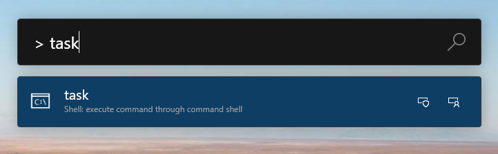
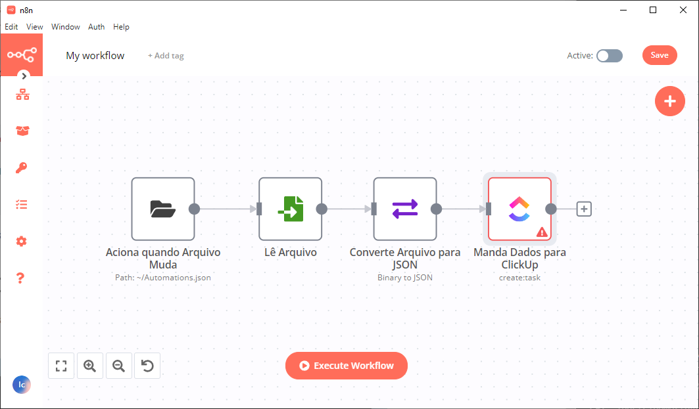

tl;dr
Este artigo descreve como utilizar o um software da microsoft chamado PowerToys Run para manipular informações no ClickUp.
Porque eu quero integrar o PowerToys ao ClickUp?
Eu tenho usado o clickup para registrar algumas tarefas pessoais e da empresa. O objetivo maior é escrever tarefas de uma forma ágil para que eu não tenha que entrar no site do clickup e navegar por várias janelas até achar o local certo para a criação da mesma.
Mas o que é o PowerToys?
PoywerToys é um software open-source, desenvolvido pela comunidade que incrementa a experiência do windows através de módulos de: seleção de cores; renomeação de arquivos; administração de janelas e utilitários de mouse e teclado e outros, porém a mais interessante destas ferramentas (para mim) é o PowerToys Run.
O Run é um módulo de pesquisa parecido com a busca do windows porém com funcionalidades extra. Através dele é possível calcular conversões de medidas, pesquisar arquivos, consultar cotações de moedas e navegar até URL. Contudo a mais poderosa dessas fuções é a execução de comandos no shell.
Como fazer isso?
A primeira etapa foi criar o script em .ps1 que execute a função que eu quero que faça: criar um arquivo de texto temporário que irá passar as informações para o workflow do n8n.
Mas o que é n8n?
O n8n é um software que serve para criação de workflows baseados em nódulos (nodes). Cada node recebe dados de um ou mais nodes, processa-o e repassa para um ou mais nodes, ou seja, o dado inicial é processado através de várias etapas para que seja criada um dado final, geralmente, mas não necessariamente, com a intenção de gerar conhecimento.
Eu nunca aprendi powershell então tive que ir atrás de referências de como criar uma função nesta linguagem que me permitisse passar o nome e a prioridade de uma nova tarefa.
A referência que eu usei para este script é de um vídeo que explica como criar scripts e funções e demonstra como torná-los executáveis.
Eu aprendi que para que um script seja executável, é necessário que o arquivo seja salvo com a extensão .ps1m o que o identifica como sendo um módulo do powershell e também deve estar salvo no diretório %user%\Documents\WindowsPowerShell\Modules\MeuModulo. É importante também garantir que a pasta e o nome do arquivo sejam iguais.
Este script contém a seguinte função task:
Listing 1: Função para Criar Tarefa
A função task aceita dois argumentos; o nome e prioridade da tarefa e salva-os em um arquivo que será usado como uma forma de cache para a execução das etapas seguintes do workflow. Este arquivo é formatado no modelo json para que sejam facilmente lidas pelo n8n posteriormente.
Assim que o arquivo json é criado, o n8n inicia a automação que foi configurada e manda as informações para o ClickUp.
O arquivo criado pela função tem esta estrutura:
Até aí tudo certo mas como que eu faço para executar esta função?
Resolvendo as questões do PowerToys Run
O PowerToys Run é capaz de executar commandos no prompt cmd automaticamente através da sua interface usando > como prefixo.

Porém como eu escrevi a função em ps1, ela não é executável através do prompt cmd, portanto deve-se configurar o powertoys para utilizar o prompt do powershell como default. Isso é feito através da modificação do arquivo ShellPluginSettings.json localizado em %localappdata%\Microsoft\PowerToys\PowerToys Run\Settings\Plugins\Microsoft.Plugin.Shell. Onde a configuração para Shell deve ser alterada de 2 para 1.
# ShellPluginSettings.json
{
"Shell": 1, \\ Mudar de 2 para 1
"ReplaceWinR": false,
"LeaveShellOpen": false,
"RunAsAdministrator": false,
"Count": {}
}Para que a alteração tenha efeito, feche o PowerToys, mude a configuração e depois abra-o novamente. A desvantagem de usar o shell do powershell é que ele não é fechado automaticamente por isso eu inseri exit na linha 17 de Listing 1.
Como configurar o workflow do n8n?
Tendo finalizado as etapas acima é necessário configura um workflow do n8n para a criação da tarefa. De forma simplificada o workflow deverá ter 4 nodes:
- Monitora quando o arquivo é alterado
- Lê o arquivo
- Converte arquivo para json
- Envia informações contidas no arquivo para o ClickUp

Adicionalmente podem ser adicionados nodes para tratamento de erros ou com lógica de condicionais mas isso vou deixar para outro post.